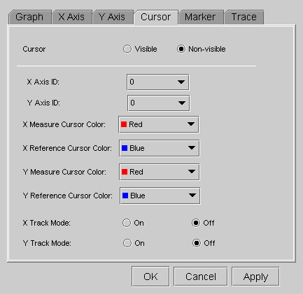

Cursor Properties

Item |
Description |
|---|---|
Cursor |
Make the cursors visible or non-visible with the corresponding check boxes (Visible/Non-visible). |
X Axis ID |
If the selected Data Display Panel has multiple x-axes, you must specify on which x-axis the cursors are placed. The positions of "X Reference Cursor" and "X Measure Cursor" are displayed based on the specified axis ID. |
Y Axis ID |
If the focused Data Display Panel has multiple y-axes, you must specify on which y-axis the cursors are placed. The positions of "Y Reference Cursor" and "Y Measure Cursor" are displayed based on the specified axis ID. |
X Measure Cursor Color |
Specify a color for the cursor in this combo box. |
X Reference Cursor Color |
Specify a color for the cursor in this combo box. |
Y Measure Cursor Color |
Specify a color for the cursor in this combo box. |
Y Reference Cursor Color |
Specify a color for the cursor in this combo box. |
X Track Mode |
If the "X Track Mode" is on, the "X Reference Cursor" and "X Measure Cursor" will be synchronized. This means the space between these cursors becomes constant at all times. |
Y Track Mode |
If the "Y Track Mode" is on, the "Y Reference Cursor" and "Y Measure Cursor" will be synchronized. This means the space between these cursors becomes constant at all times. |